preparo a saída.
Peitoral, guia, mosquetão. Tudo conferido antes do primeiro passo.
antes da rua.
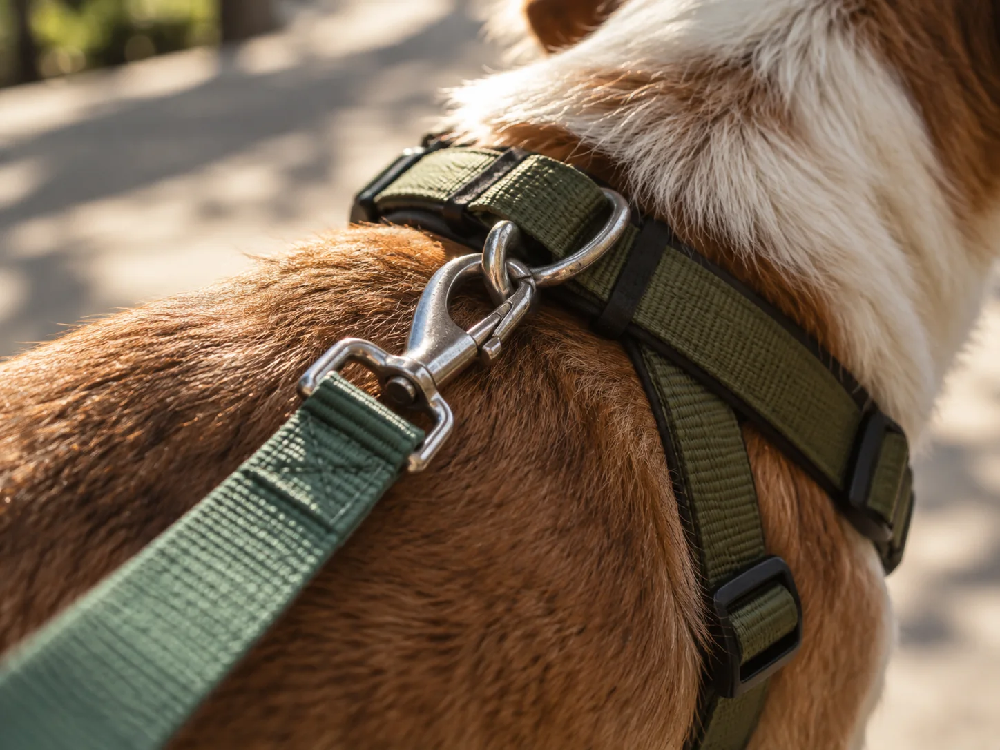
Passeios para cães, com atenção ao ritmo, à rotina e ao caminho.
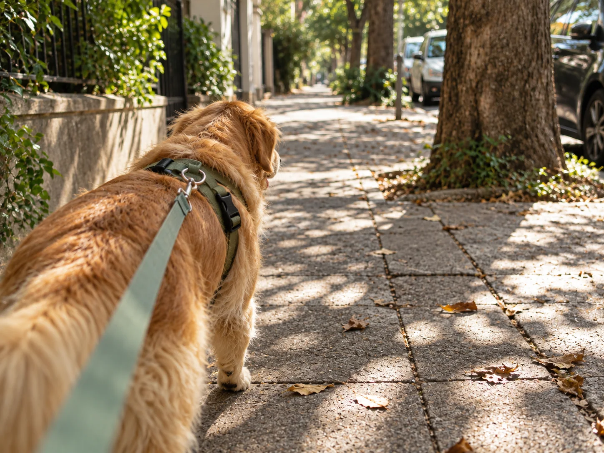
A LIV acompanha cães em seus passeios e faz dessa parte do dia um momento de rua: movimento, cheiros, pausas e observação.
Cada passeio acontece no ritmo daquele cachorro e daquele dia.
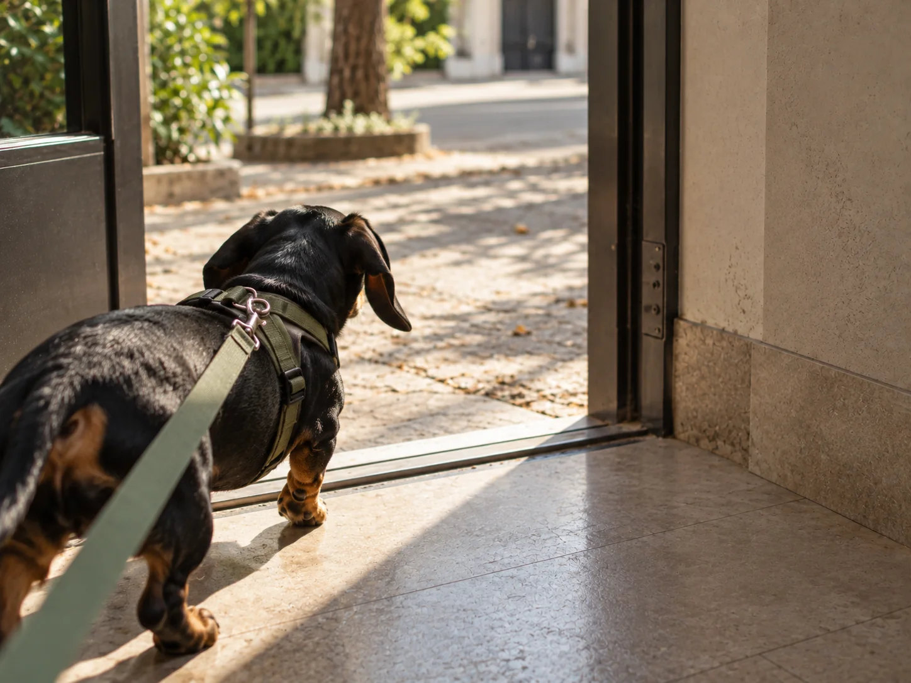
Peitoral, guia, mosquetão. Tudo conferido antes do primeiro passo.
antes da rua.

Andar, cheirar, observar, mudar o ritmo e parar quando precisa.
o caminho também é feito de cheiros.
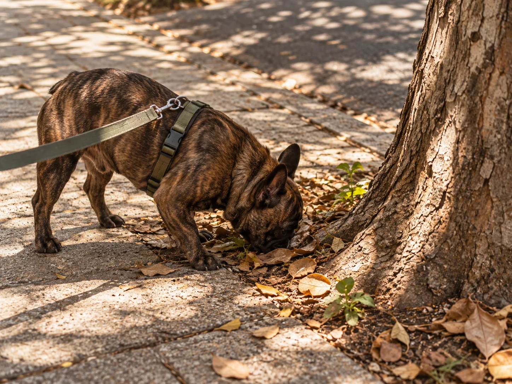
Água, sombra, descanso. Alguns dias pedem outro ritmo.
cuidado também é saber diminuir.
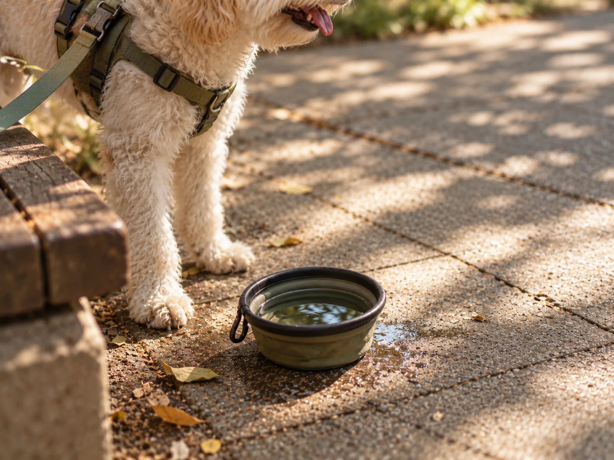
Porta, elevador, retorno. A rotina termina onde começou.
chegada com o mesmo cuidado.
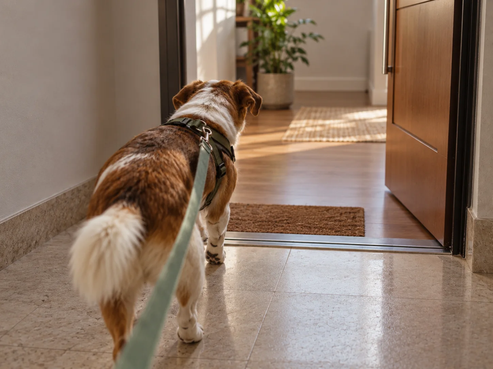
Cheiros, sombras e caminhos não são cenário. Eles fazem parte do passeio.
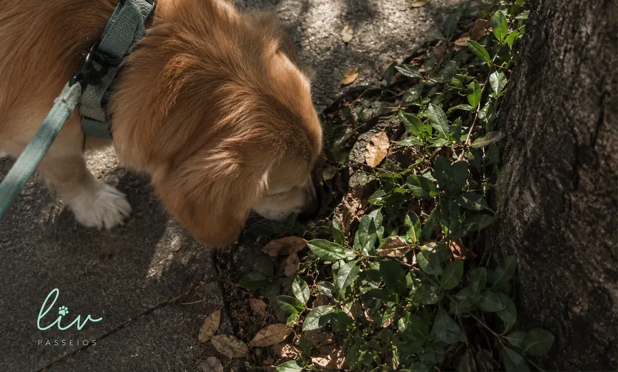
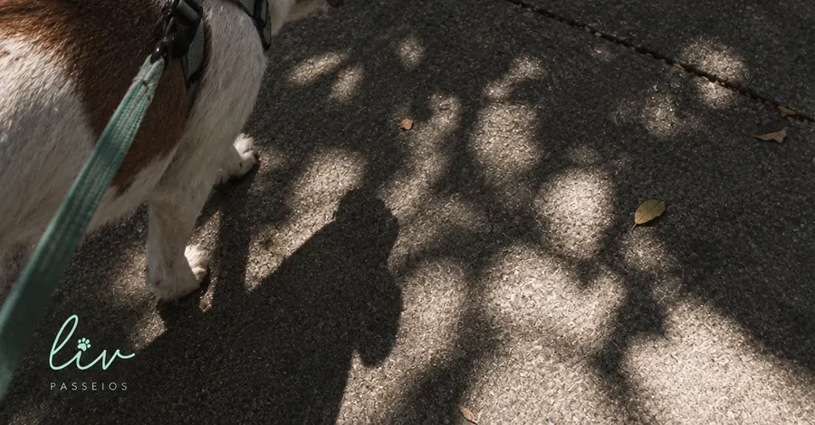
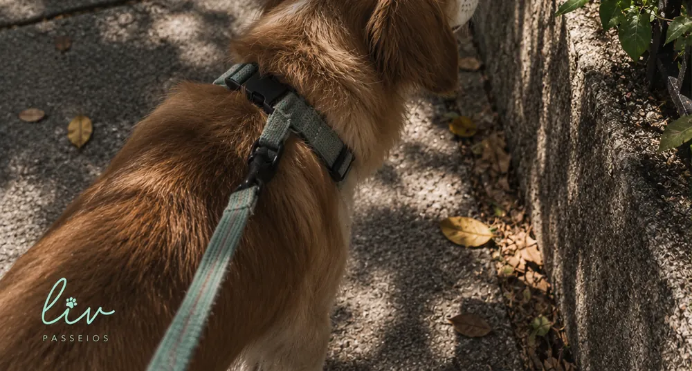
O cuidado aparece em quatro decisões simples, repetidas todo passeio.
conversar sobre um passeioA rotina e as informações importantes daquele dia entram na conversa.
Peitoral, guia e mosquetão são observados antes da rua.
Temperatura, cheiros, pausas e comportamento ajudam a definir o ritmo.
O retorno encerra a rotina com a mesma atenção da saída.
Um diário curto do que acontece entre a saída e a volta.
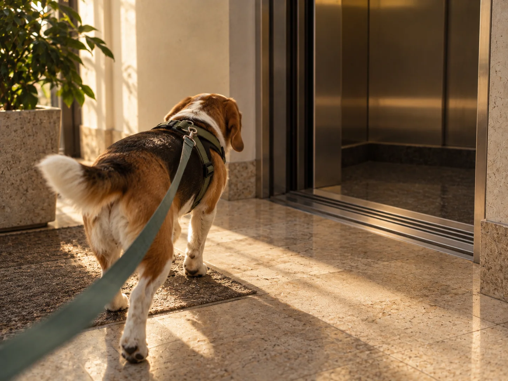
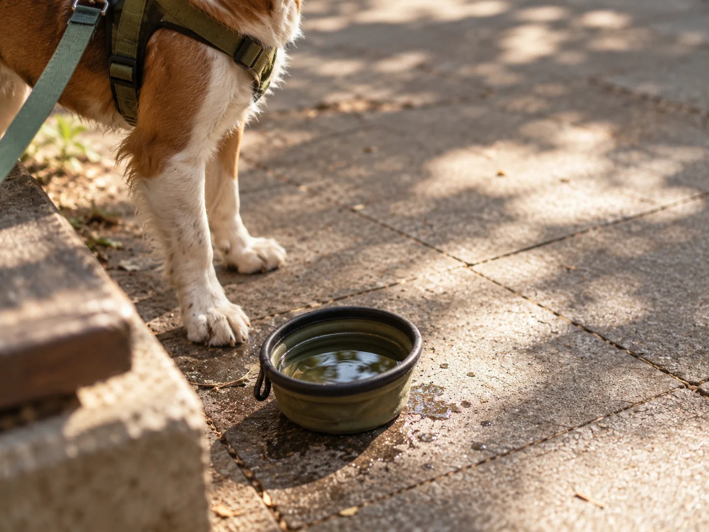
Nem todo cuidado precisa virar discurso. Na rotina, ele aparece nas pequenas decisões antes, durante e depois da rua.
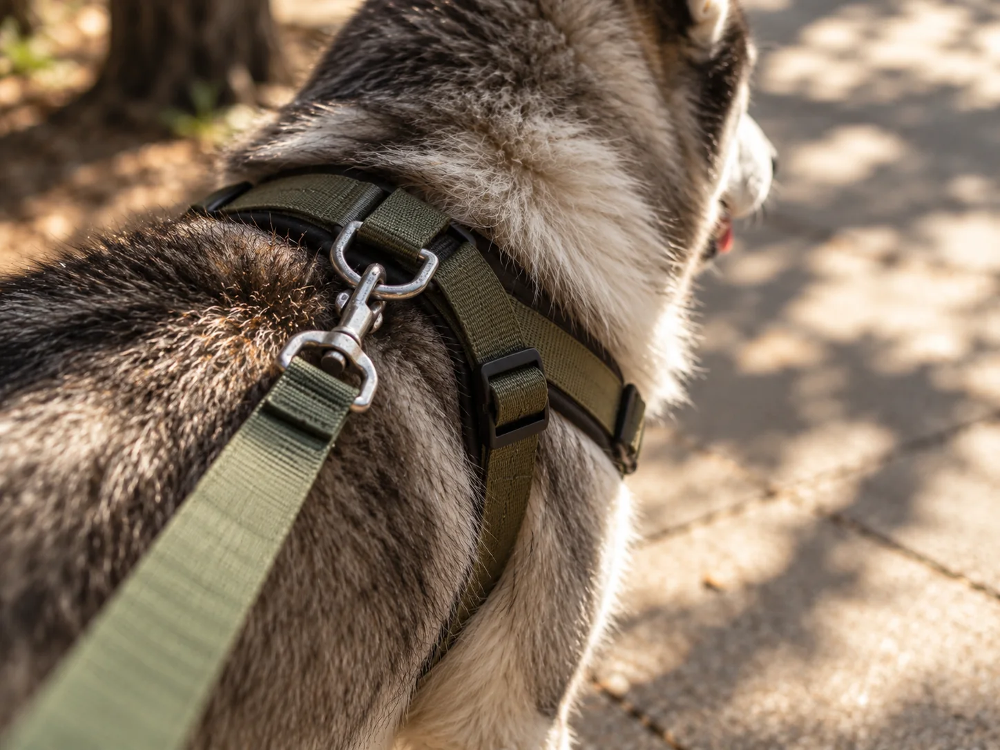
Peitoral ajustado e guia presa antes de cada saída — o passeio começa no equipamento.
O Instagram reúne os registros da rotina e é o melhor lugar para acompanhar o trabalho de perto.
Chame a LIV pelo Instagram e conte um pouco sobre o cachorro e a rotina que você procura.
O ambiente, a temperatura, as pausas, os cheiros e o comportamento do cachorro ajudam a definir o ritmo de cada dia.
Quer conhecer melhor a rotina da LIV? Veja os registros e mande uma mensagem pelo Instagram.